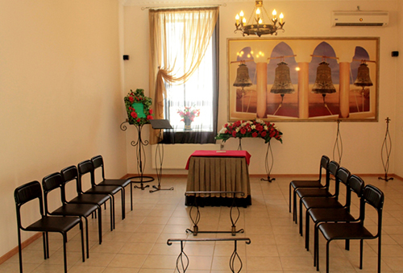

<div class="body">
  <div class="my-5 margin-x">
    <div class="flex">
      <div class="flex">
        <div class="" style="animation-delay: 0.5s; visibility: visible; animation-name: fadeInDown;">
          <div class="text-center ">
            <h1 class="text-center"
              style="text-align: justify; animation-delay: 0.5s; visibility: visible; animation-name: fadeInUp;">
              Farewell Hall
            </h1>
            
          </div>
          <div>
          <p style="text-align: justify;">Nowadays, farewell to the deceased increasingly consists of two parts - burial
            of the deceased by a priest and a non-religious memorial service. For this new funeral tradition, the
            relatives of the deceased usually rent a special mourning hall. By calling KP Ritual Service, you can order
            a
            ritual hall for farewell. The special purpose of the hall requires the creation of a mourning atmosphere, so
            our experts attach great importance to the design elements.</p>
          <p style="text-align: justify;">Even in the case of the most budget funeral ceremony, the mourning hall must
            contain certain elements without which the farewell ritual cannot take place. A pedestal for the coffin, a
            photo portrait of the deceased, at least a few chairs for the mourners (in case someone gets sick), lamps
            and
            candles, as well as flower arrangements must be present.</p>
          <p style="text-align: justify;">Ritual Service agents will not only help you order a ritual hall for farewell
            and organize funeral dinners, but also, if necessary, think of a scenario for the farewell ceremony. At your
            request, our specialists can install equipment for musical accompaniment in the mourning hall and select the
            appropriate musical compositions. It is also possible to equip work platforms for a funeral band or
            videographer to perform in the event of an online broadcast of the ceremony. Our agents will also provide
            additional decoration of the hall depending on your wishes.</p>
          <hr>
          <h2 style="text-align: justify;">Decoration of the ritual hall</h2>
          <p style="text-align: justify;">As a rule, mourners bring wreaths and bouquets of artificial flowers. However,
            at the request of the customer, our agents can further decorate the ritual hall for the farewell with
            compositions of fresh and artificial flowers. Following the rules of mourning floristics, dark red and white
            flowers, branches of ferns and conifers are usually used in the decoration of the hall. We will also provide
            all the necessary church paraphernalia: icons, a cross, lamps and candles.</p>
          <p style="text-align: justify;">Our agents will also take care of a special dim lighting that emphasizes grief
            and mourning, but is bright enough for the audience to communicate. By contacting the agent of KP Ritual
            Service, you can order a farewell room in absolutely any area of ​​the city of Kropyvnytskyi. We will also
            arrange and hold a decent funeral, taking into account customs and traditions, religion and your personal
            preferences.</p>
          </div>
        </div>
      </div>
    </div>
  </div>
</div>